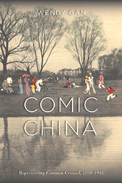

<body bgcolor="#FFFFFF" text="#000000" link="#0000FF" vlink="#CC0000" alink="#CC0000"><center><hr width="350" size="1" align="center" noshade>Examining cross-cultural humor and power struggles in Anglo-American representations of China<hr width="350" size="1" align="center" noshade><p><a href="https://cdcshoppingcart.uchicago.edu/Cart/ChicagoBook.aspx?ISBN=&&PRESS=temple" target="_top">Buy this book!</a> | <a href="https://cdcshoppingcart.uchicago.edu/Cart/Cart.aspx?PRESS=temple" target="_top">View Cart</a> | <a href="https://cdcshoppingcart.uchicago.edu/Cart/Cart.aspx?PRESS=temple" target="_top">Check Out</a></p><p></p></center><!--none//--><h1 class = "booktitle">Comic China</h1> <h1 class = "subtitle">Representing Common Ground, 1890-1945</h1>
<h3>Wendy Gan </h3>
<p class="info">cloth: $64.50, Jul 18<BR>EAN:&nbsp;978-1-4399-1629-2<BR><font color=#990033>Not Yet Published Preorder</FONT><font size=-7><br>&nbsp;</font></p><p class="info">e-book: $64.50, Jul 18<BR>EAN:&nbsp;978-1-4399-1631-5<BR><font color=#990033>Not Yet Published Preorder</FONT><font size=-7><br>&nbsp;</font></p></p></td></tr></table>
<BR> <p class="info">202 pp<BR> 6 x 9<BR> 9 figs., 2 halftones <p class="info"><font size=-7>&nbsp;</font></p><p class="info">
</P><BLOCKQUOTE></BLOCKQUOTE>
<p>Wendy Gan's <i>Comic China</i> investigates the circumstances and motivations of cross-cultural humor. How do works that trade in laughter shape our understanding of Western discourses about China? Is humor meant to be inclusive or exclusive? Does it protect or challenge the status quo? Gan suggests that the simple, straightforward laugh may actually be a far more intricate negotiation of power relations.Gan unpacks texts by authors who had little real contact with China as well as writers whose proximity to China influenced their representations. Looking beyond the familiar canon of serious modernist texts and the Yellow Peril classics of popular fiction, Gan analyzes turn-of-the-twentieth-century musical comedies set in the Far East, Ernest Bramah's chinoiserie-inspired tales, and interwar travel writing. She also considers the comic works of the missionary Arthur Henderson Smith, the former Maritime Customs Officer J.O.P. Bland, and the Shanghai journalist and advertising man Carl Crow. Though it includes humor that is less than complimentary to the Chinese, <i>Comic China</i> reminds us that laughter is tied to our common humanity. Gan navigates the humor used in comic depictions ultimately to find, not superiority or ridicule, but common ground.<br>
<P CLASS="top"><A HREF="#top">BACK TO TOP</A></P>&nbsp;
<BR>&nbsp;
&nbsp;<P>
</P><BR>&nbsp;
<H2 class="inpageheading"><A NAME="author bio"></a>About the Author(s)</H2><p><b>Wendy Gan</b> is an Associate Professor of English at the University of Hong Kong and the author of <i>Women, Privacy and Modernity in Early Twentieth-Century British Writing</i> and <i>Fruit Chan's </i>Durian Durian.<br>
<P CLASS="top"><A HREF="#top">BACK TO TOP</A></P>
<p><h2 class="inpageheading"><a name="subjects"></a>Subject Categories</h2> <p><a href="http://www.temple.edu/tempress/asian.html" target="_top">Asian Studies</a> <br><a href="http://www.temple.edu/tempress/literature.html" target="_top">Literature and Drama</a> <br><a href="" target="_top"></a> <br><a href="" target="_top"></a> <br><a href="" target="_top"></a> </p>
</p>
<P>
</P>
<p align="center"><a href="https://cdcshoppingcart.uchicago.edu/Cart/ChicagoBook.aspx?ISBN=&&PRESS=temple" target="_top">Buy this book!</a> | <a href="https://cdcshoppingcart.uchicago.edu/Cart/Cart.aspx?PRESS=temple" target="_top">View Cart</a> | <a href="https://cdcshoppingcart.uchicago.edu/Cart/Cart.aspx?PRESS=temple" target="_top">Check Out</a></p><p><font face="Arial" size="1"><a href="copyright.html" onMouseOver="window.status='Web Copyright Policy';return true;" onMouseOut="window.status=''" title="Web Copyright Policy">&copy;</a> 2018 <a href="http://www.temple.edu" target="new" onMouseOver="window.status='Link to Temple University home page';return true;" onMouseOut="window.status=''" title="Link to Temple University home page">Temple University</a>. All Rights Reserved. http://www.temple.edu/tempress/titles/2504_reg.html</font></p>